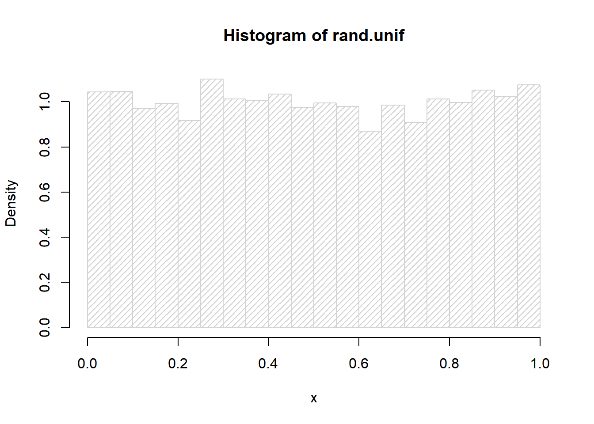
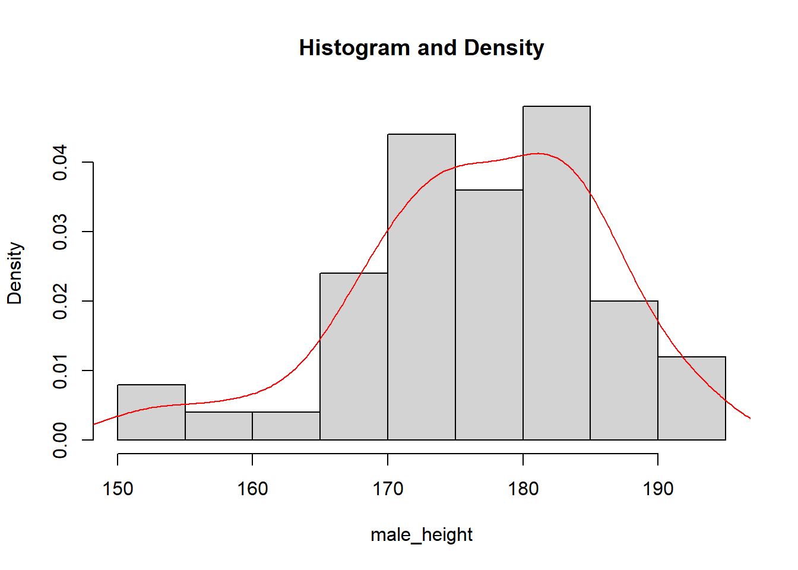
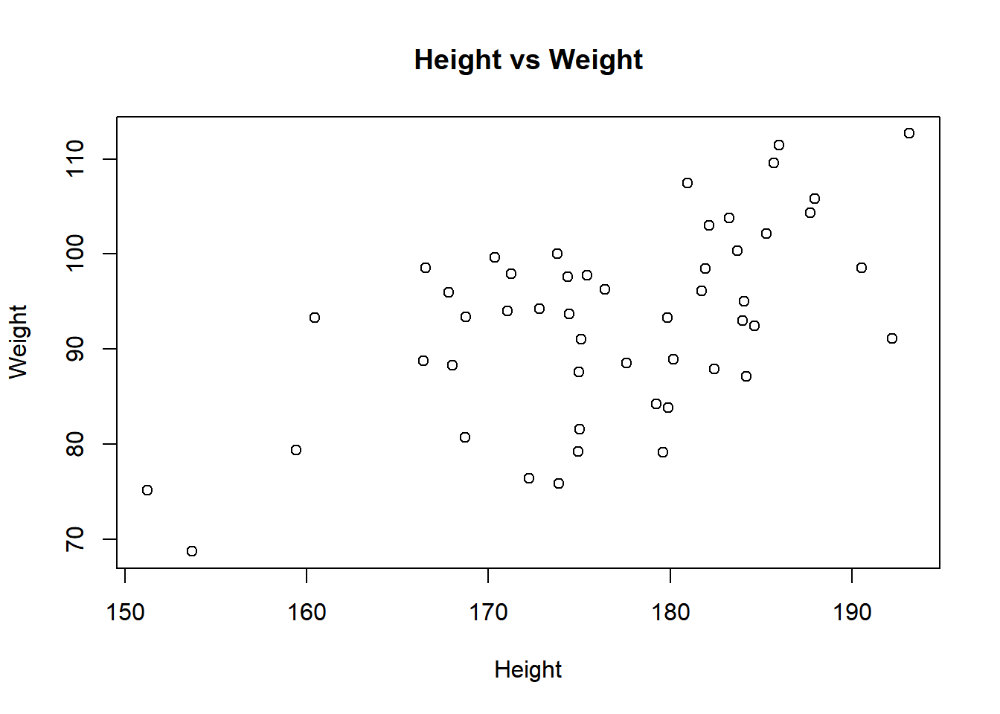
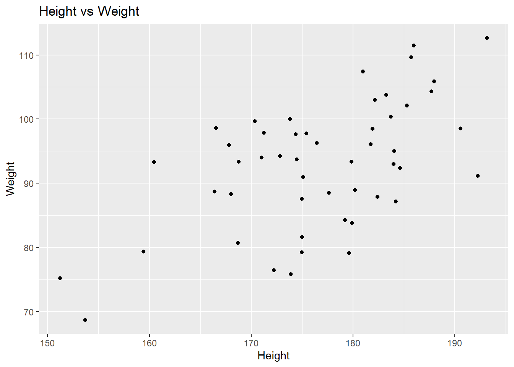

Chapter 5 Basic Statistics
Statistics is the study of how best to collect, analyze, and draw conclusions from data. R is very powerful for statistically analysis. You will learn how to do some basic statistical analysis in this chapter.
5.1 Generate data
Height(cm) of 50 males and 50 females are estimated from https://dqydj.com/height-percentile-calculator-for-men-and-women/).
set.seed(1)Set the seed to the random number generation to be 1. This ensures the results are reproducible across everyone’s execution.
rnorm() rnorm.X generates multivariate normal random variates.
set.seed(1)
male_height = rnorm(n = 50, mean = 175.6, sd = 11)
female_height = rnorm(n = 50, mean = 161.5, sd = 10.5)We can keep only two decimal places using round().
male_height = round(male_height, 2)
female_height = round(female_height, 2)Check the number of elements in the vector.
length(male_height)## [1] 50Visualization of male group’s height with histogram plot
hist(male_height, freq = FALSE, main = "Histogram Plot")
Visualization of male group’s height with density plot
plot(density(male_height), main = "Density Plot")
Combine histogram plot and density plot using lines()
The lines( ) function adds information to a graph. It can not produce a graph on its own. Usually it follows a plot(x, y) command that produces a graph.
hist(male_height, freq = FALSE, main = "Histogram and Density")
lines(density(male_height), col = "red")
Boxplot of height in male group and female group
boxplot(male_height, female_height, names = c("male", "female"), ylab = "height(cm)")
Get basic information about the vector (minimum, maximum and quantiles) using summary() .
summary(male_height)## Min. 1st Qu. Median Mean 3rd Qu. Max.
## 151.2 171.5 177.0 176.7 183.6 193.2summary(female_height)## Min. 1st Qu. Median Mean 3rd Qu. Max.
## 142.6 155.5 162.7 162.7 167.9 186.7Specific functions for Mean, Median, Minimum, Maximum, Standard deviation, Variance, Sum are shown below:
mean(), median(), min(), max(), sd(), var(), sum()The R software provides access to the uniform distribution, runif() function generates random deviates of the uniform distribution and is written as runif(n, min = 0, max = 1). We may generate n number of random samples by the min and the max argument.
Example: approximate the density function for X∼U(0,1)
rand.unif <- runif(10000, min = 0, max = 1)
hist(rand.unif, freq = FALSE, xlab = 'x', density = 20)If we have another record about weight for the same group of people, we can group weight and height data together into a list(assuming weight has correlation with height).
set.seed(1)
male_weight = 0.52*male_height + runif(n = 50, min = -15, max = 15)
male_weight = round(male_weight, 2)
female_weight = 0.48*female_height + runif(n = 50, min = -14, max = 14)
female_weight = round(female_weight, 2)Make a group Weight data and height data together.
male_group = list(height = male_height, weight = male_weight)
female_group = list(height = female_height, weight = female_weight)Use scatterplot to visualize the relationship of height and weight in male group
plot(x = male_group$height,y = male_group$weight,
xlab = "Height", ylab = "Weight",
main = "Height vs Weight"
)5.2 Statistical analysis
Correlation: check the correlation between height and weight in male group and female group.
cor(male_group$height, male_group$weight)## [1] 0.5744616cor(female_group$height, female_group$weight)## [1] 0.5912873t.test(): test if there is a significant difference between the means of height&weight in the male group and female group.
t.test(male_group$height, female_group$height)##
## Welch Two Sample t-test
##
## data: male_group$height and female_group$height
## t = 7.2232, df = 96.91, p-value = 1.158e-10
## alternative hypothesis: true difference in means is not equal to 0
## 95 percent confidence interval:
## 10.13345 17.81215
## sample estimates:
## mean of x mean of y
## 176.7044 162.7316t.test(male_group$weight, female_group$weight)##
## Welch Two Sample t-test
##
## data: male_group$weight and female_group$weight
## t = 7.6802, df = 97.411, p-value = 1.249e-11
## alternative hypothesis: true difference in means is not equal to 0
## 95 percent confidence interval:
## 10.87635 18.45605
## sample estimates:
## mean of x mean of y
## 92.8642 78.1980fisher.test(): test the proportions of people with obesity in male group and female group have significant difference or not.
Calculate BMI using equation BMI = weight(kg)/height(m)^2
male_BMI = male_group$weight/(male_group$height/100)^2
female_BMI = female_group$weight/(female_group$height/100)^2For people with BMI equal or larger than 30, define them as having obesity.
male_obesity = ifelse(male_BMI >= 30, "Yes", "No")
female_obesity = ifelse(female_BMI >= 30, "Yes", "No")Get the number of people with obesity in each group and summary in a matrix.
male_num = table(male_obesity)
female_num = table(female_obesity)
obesity_num = rbind(male_num, female_num)Fisher’s exact test:
fisher.test(obesity_num)##
## Fisher's Exact Test for Count Data
##
## data: obesity_num
## p-value = 0.6865
## alternative hypothesis: true odds ratio is not equal to 1
## 95 percent confidence interval:
## 0.3282065 1.8624128
## sample estimates:
## odds ratio
## 0.78454155.3 Advanced plotting: ggplot2
ggplot2 is an R package to creat plots in a more flexible way. It can be used to generate different types of plots including density plot, dot plot, box plot and so on.
Here, we can use ggplot2 to generate the scatterplot of height and weight in male group we did before.
First, we need to make a dataframe.
library(ggplot2)## Warning: package 'ggplot2' was built under R version 4.0.4data <- data.frame(male_height, male_weight, female_height, female_weight)ggplot(data, aes(male_height, male_weight)) +
geom_point() +
labs(x = "Height", y = "Weight", title = "Height vs Weight")
A violin plot depicts distributions of numeric data for one or more groups using density curves. The width of each curve corresponds with the approximate frequency of data points in each region.
Create data frame for violin plot including the height of the male group and the female group as well as a column indicating which group it comes from.
data <- data.frame(height = c(male_height, female_height), group = c(rep("male", length(male_height)), rep("female", length(female_height))))Use ggplot2 to plot a violin plot of height in male and female group.
ggplot(data, aes(factor(group),height)) +
geom_violin() + geom_boxplot(width=0.1)+
labs(x = "Group", y = "Height")5.4 Exercise
Use the PlantGrowth, perform t test to evaluate the weight of control and treatment groups.
Quiz
Q1 Extract weight of control and treatment groups and name them as ctrl_grp and trt1_grp.
Q2 Plot density for Control and Treatment1, with xlim from 2.5 to 7.5, and ylim from 0 tp 0.65.
HINT: use par(new = TRUE) to combine two graphs
Q3 Perform t test.